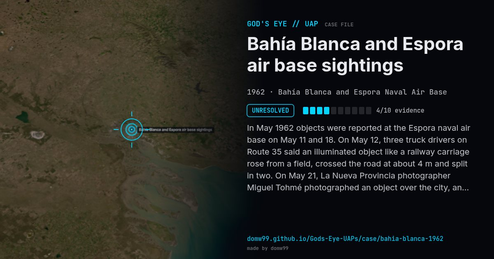

Bahía Blanca and Espora air base sightings
UNRESOLVED

In May 1962 objects were reported at the Espora naval air base on May 11 and 18. On May 12, three truck drivers on Route 35 said an illuminated object like a railway carriage rose from a field, crossed the road at about 4 m and split in two. On May 21, La Nueva Provincia photographer Miguel Tohmé photographed an object over the city, and the photo made the front page. Sightings at the Puerto Belgrano naval base followed.
What was seen
Shape: Lighted "railroad car"; ball of light
Witnesses: Base personnel, truck drivers, a newspaper photographer
Duration: Two weeks
Sources
Browse
- Argentina
- 1960s
- Unresolved
- Photo and video cases
- Many independent witnesses
- Military witnesses
- Photographs
- Lights and fireballs
- Spheres and orbs
- Cylinders and cigar shapes